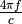
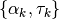

from pylayers.simul.link import *
%pylab inline
WARNING:traits.has_traits:DEPRECATED: traits.has_traits.wrapped_class, 'the 'implements' class advisor has been deprecated. Use the 'provides' class decorator.
Populating the interactive namespace from numpy and matplotlib
WARNING: pylab import has clobbered these variables: ['plt', 'mlab'] %matplotlib prevents importing * from pylab and numpy
How to do Ray Tracing simulation using DLink¶
This section illustrates the `link <http://pylayers.github.io/pylayers/modules/pylayers.simul.link.html>`__ module. A Dlink object is a deterministic (Single Input Single Output) SISO link.
L=DLink()
The repr function provides information about the default link, which is stored in the hdf5 file. It should correspond to the default Layout. A link gathers various objects and information e.g + Layout file + Node a (first termination of the link) + position + antenna file + antenna rotation matrix + Node b (second termination of the link) + position + antenna file + antenna rotation matrix + Frequency range + fmin + fmax + fstep
L
filename: Links_0_defstr.ini.h5
Link Parameters :
------- --------
Layout : defstr.ini
Node a
------
position : [ 766.00300113 1113.94747911 1.2 ]
Antenna : S2R2.sh3
Rotation matrice :
[[ 1. 0. 0.]
[ 0. 1. 0.]
[ 0. 0. 1.]]
Node b
------
position : [ 766.00300113 1113.94747911 1.2 ]
Antenna : S2R2.sh3
Rotation matrice :
[[ 1. 0. 0.]
[ 0. 1. 0.]
[ 0. 0. 1.]]
Link evaluation information :
-----------------------------
distance : 0.000 m
delay : 0.000 ns
fmin (fGHz) : 2.0
fmax (fGHz) : 11.0
fstep (fGHz) : 0.05
To evaluate a link there is the eval method. This method takes as argument a list of desired outputs, the type of algorithm being used, the ceil heigh and the number og multi reflection between ceil and floor.
aktk=L.eval(force=[], output=['sig','ray','Ct','H'],
si_algo='old',ra_ceil_height_meter=3,ra_number_mirror_cf=1)
Signatures'> from 1_1_3 loaded
Rays'> from 3_0_0 loaded
Ctilde'> from 0_0_0 loaded
Tchannel'> from 0_0_0_0_0_0_0 loaded
The propagation channel (without antenna) can be vizualized on a ray by ray mode.
#L._show3()
fig = plt.figure(figsize=(8,8))
C = L.C
f,a = C.show(cmap='jet',fig=fig)
It is possible to look at individual ray transfer function, as illustrated below.
C.Ctt.y.shape
(105, 181)
ir = 0
plt.plot(C.Ctt.x,abs(C.Ctt.y[ir,:]))
plt.xlabel('Frequency (GHz)')
plt.ylabel('Level (linear)')
plt.title('Modulus of the ray '+str(ir)+' transfer function')
<matplotlib.text.Text at 0x2b0683a59250>
ir = 30
plt.plot(C.Ctt.x,abs(C.Ctt.y[ir,:]))
plt.xlabel('Frequency (GHz)')
plt.ylabel('Level (linear)')
plt.title('Modulus of the ray '+str(ir)+' transfer function')
<matplotlib.text.Text at 0x2b0683df21d0>
In the link we also have the transmission channel accounting for the effect of antennas and Friis factor. If the ray transfer function is scaled with 
plt.plot(L.H.x,L.H.y[0,:]*4*np.pi*L.H.x/0.3)
/home/uguen/anaconda/lib/python2.7/site-packages/numpy/core/numeric.py:462: ComplexWarning: Casting complex values to real discards the imaginary part
return array(a, dtype, copy=False, order=order)
[<matplotlib.lines.Line2D at 0x2b0683ee6950>]
Notice that in this case the frequency
The infinite bandwidth channel impulse response is plotted below from the extrated set .
plt.stem(aktk[1],aktk[0])
plt.title('Infinite bandwith Channel Impulse response')
plt.xlabel('delay (ns)')
plt.ylabel('amplitude (linear scale')
<matplotlib.text.Text at 0x2b0683f20390>
import pylayers.simul.simulnet as sn
import pylayers.simul.simultraj as st
S=sn.Simul()
Layout graphs are loaded from /home/uguen/Bureau/P1/struc/ini
S.L
----------------
TA-Office.ini
Image('/home/uguen/Bureau/P1/struc/images/DLR4991.png')
----------------
Number of points : 71
Number of segments : 94
Number of sub segments : 18
Number of cycles : 25
Number of rooms : 24
degree 0 : []
degree 1 : [-17 -16]
degree 2 : 37
degree 3 : 32
xrange :(0.0, 40.0)
yrange :(0.0, 15.0)
Useful dictionnaries
----------------
dca {cycle : []} cycle with an airwall
sl {slab name : slab dictionary}
name : {slab :seglist}
Useful arrays
----------------
pt : numpy array of points
normal : numpy array of normal
offset : numpy array of offset
tsg : get segment index in Gs from tahe
isss : sub-segment index above Nsmax
tgs : get segment index in tahe from Gs
lsss : list of segments with sub-segment
sla : list of all slab names (Nsmax+Nss+1)
degree : degree of nodes
S.runsimul()
from pylayers.mobility.trajectory import *
A trajectories object is a list of trajectories. The loadh5 methods by default loads the file ‘.h5’ generated by `Simulnet <http://pylayers.github.io/pylayers/modules/pylayers.simul.simulnet.html>`__.
T=Trajectories()
T.loadh5()
T
Trajectories performed in Layout : TA-Office.ini
Trajectory of agent John with ID 1
----------------------------------
t (s) : 0.00 : 0.20 : 119.80
dtot (m) : 454.84
Vmoy (m/s) : 3.80
x y vx vy ax t
1970-01-01 00:00:00 18.907750 2.528547 0.038749 0.155237 0.193744
1970-01-01 00:00:00.200000 18.921699 2.584433 0.069748 0.279427 0.154995
ay s
t
1970-01-01 00:00:00 0.776185 0.160
1970-01-01 00:00:00.200000 0.620948 0.448
Trajectory of agent Alex with ID 2
----------------------------------
t (s) : 0.00 : 0.20 : 119.80
dtot (m) : 437.65
Vmoy (m/s) : 3.65
x y vx vy ax t
1970-01-01 00:00:00 13.5320 7.4965 0.160 -1.141434e-16 0.80
1970-01-01 00:00:00.200000 13.5896 7.4965 0.288 -2.069441e-16 0.64
ay s
t
1970-01-01 00:00:00 -5.707171e-16 0.160
1970-01-01 00:00:00.200000 -4.640036e-16 0.448
Access point Router with ID 6
-----------------------------
t (s) : 0.00
Vmoy (m/s) : 0.0
x y z vx vy ax ay s
t
1970-01-01 0.5 2 2.5 0 0 0 0 0
Access point Router with ID 7
-----------------------------
t (s) : 0.00
Vmoy (m/s) : 0.0
x y z vx vy ax ay s
t
1970-01-01 0.7 14 2.5 0 0 0 0 0
Access point Router with ID 8
-----------------------------
t (s) : 0.00
Vmoy (m/s) : 0.0
x y z vx vy ax ay s
t
1970-01-01 39 13 2.5 0 0 0 0 0
A SimulTraj object is derived from a trajectory calculated previously in simulnet and a body agent description. The Simultraj object get the trajectories from the simultaj.ini file.
St=st.Simul(verbose=False)
**** Processor coding : Intel-PC
**** Processor coding : Intel-PC
---------------------------------------------------------------------------
AttributeError Traceback (most recent call last)
<ipython-input-19-ae27233a0375> in <module>()
----> 1 St=st.Simul(verbose=False)
/home/uguen/Documents/rch/devel/pylayers/pylayers/simul/simultraj.pyc in __init__(self, source, verbose)
110
111
--> 112 self._gen_net()
113 self.SL = SLink()
114 self.DL = DLink(L=self.L,verbose=self.verbose)
/home/uguen/Documents/rch/devel/pylayers/pylayers/simul/simultraj.pyc in _gen_net(self)
260 D.append(
261 Device(self.dpersons[p].dev[dev]['name'], ID=dev))
--> 262 N.add_devices(D, grp=p)
263 # get access point devices
264 for ap in self.dap:
/home/uguen/Documents/rch/devel/pylayers/pylayers/network/network.pyc in add_devices(self, dev, p, grp)
454 for d in dev:
455 if d.ID in self:
--> 456 raise AttributeError('Devices must have a different ID')
457
458
AttributeError: Devices must have a different ID
#St.run(t=list(np.arange(0,1,0.1)),OB=True,B2B=True,B2I=True)
#St.data
Information about the simulated network is obtained
St.N
---------------------------------------------------------------------------
NameError Traceback (most recent call last)
<ipython-input-22-292f54c77c9f> in <module>()
----> 1 St.N
NameError: name 'St' is not defined
#St._show3()
#St.data.head()
#ak,tk,ek=St._loadh5(2,'0_Alex','1_Alex','bluetooth-class2')
#stem(tk,ak)